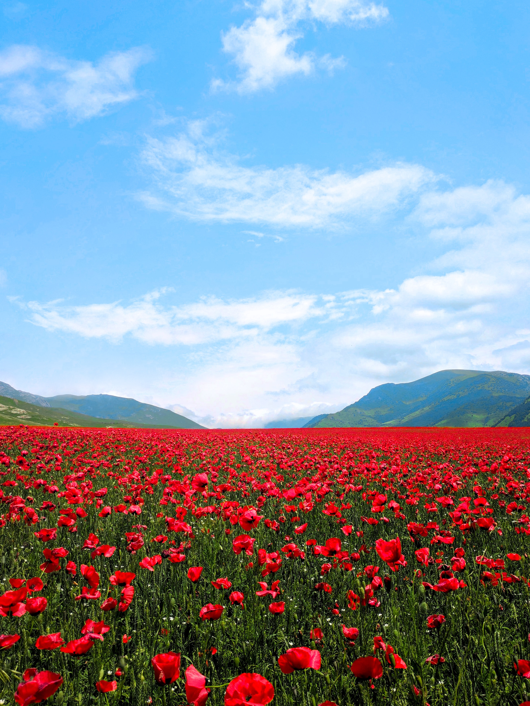
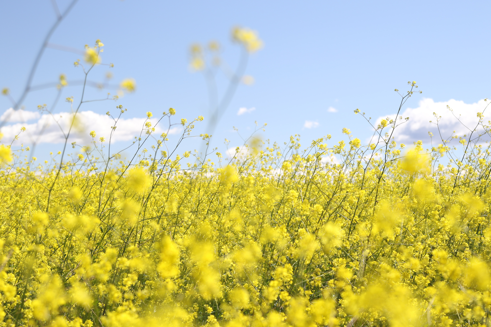
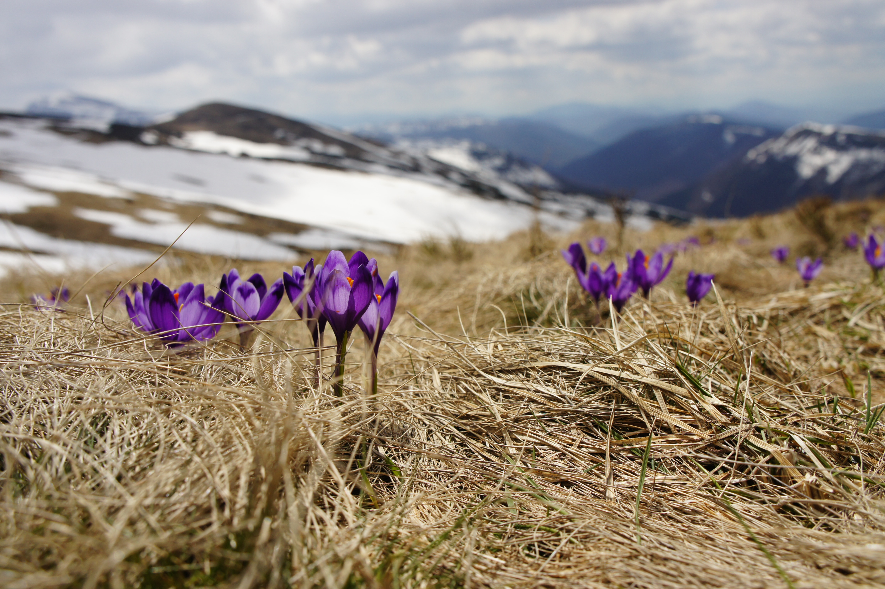
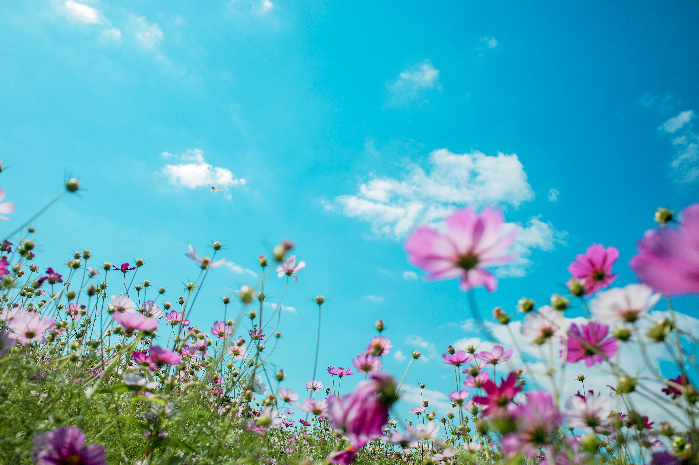
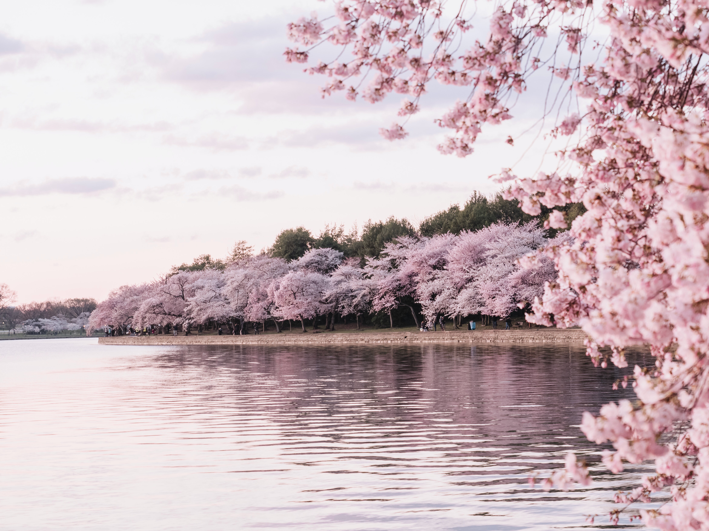
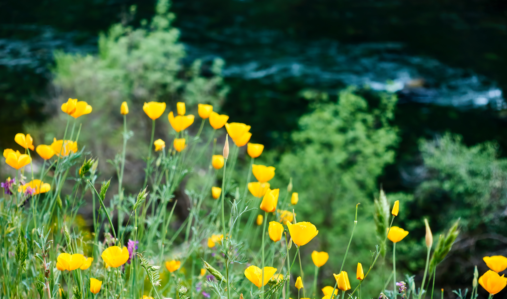
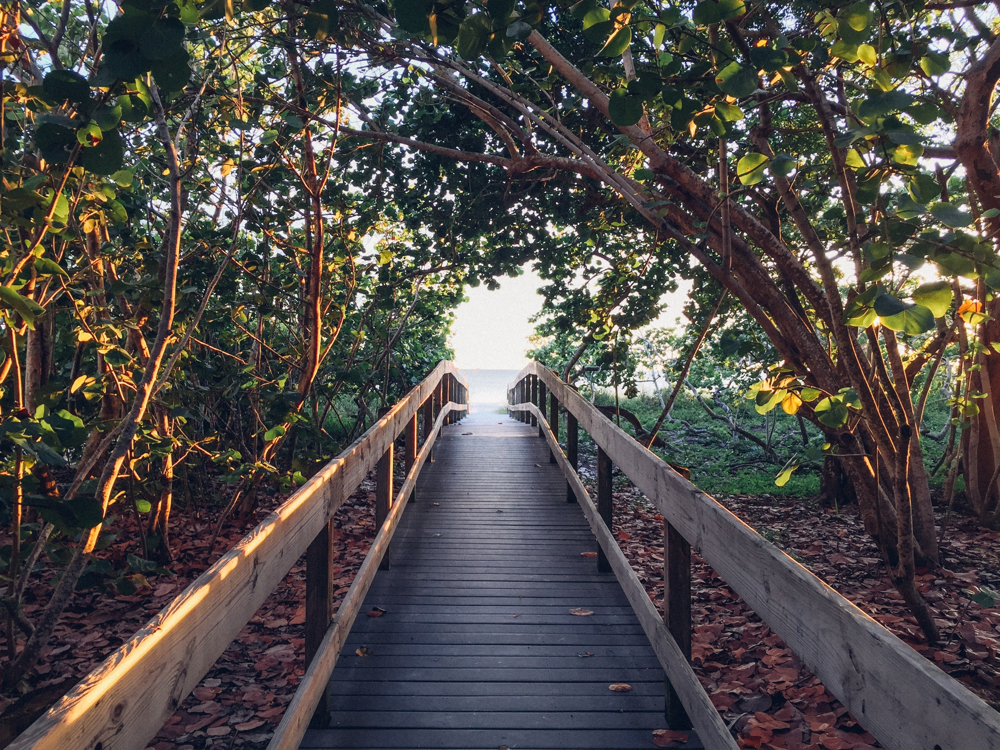
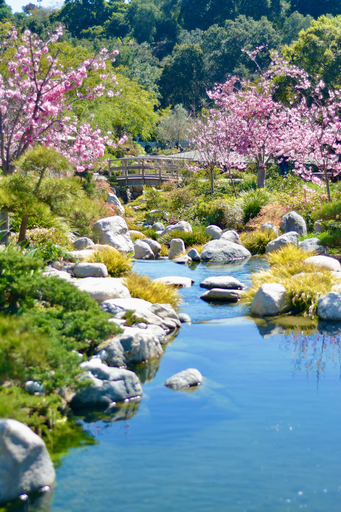

Wild Flower Walk
Rape Field Hike
Green Escape

Fresh Start Trail
Floral Ramble
Awakening Nature Expedition
Flower-Filled Trek
Blossom Hike
Green Hills Hike
Spring Bridge Walk
Spring Awakening Trek
Sunshine Stroll